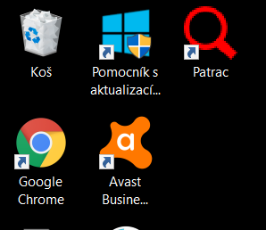

Instalace je možná několika způsoby.
Pokud jste instalaci ještě neprováděli a na počítači nemáte nainstalován nástroj OSGeo4W, je vhodné použít instalátor.
Pokud jste instalaci v minulosti provedli pomocí instlátoru install.bat, je vhodné použít instalátor, který provede aktualizaci.
Pokud máte na počítači nainstalován OSGeo4W, pak je nutná ruční instalace. Obraťe se na podporu.
Pokud chcete instalovat do OS Linux, obraťte se na podporu. Podpora OS Linux miluje, takže přijede i na konec republiky.
Důležité je, že aplikace nedokáže pracovat bez dobře nastavené databáze.
K aplikaci je tedy nutné instalovat navíc databázi. Databázi je možné instalovat pomocí nastavení aplikace (pozn. funkce je v přípravě).
Pokud se jednalo o novou instalaci mělo by být vše v pořádku.
Pokud jste prováděli reinstalaci, vyzkoušejte nejdříve zda vše funguje dle očekávání. V případě problémů nemažte prosím instalační adresář, který obsahuje zálohu předchozí verze a obraťte se na podporu.
Aplikaci spustíte pomocí ikony na ploše. Spustí se program Quantum GIS.

Pokud z jakéhokoli důvodu není na ploše ikona Pátrač. Můžete zkusit aplikaci spustit poklikáním v průzkumníkovi na soubor C:\OSGeo4W64\bin\qgis.bat
Pokud daný soubor neexistuje obraťte se na podporu, protože se něco úplně podělalo.